Татьяна Фокина, Конференция по цифровой доступности, 2022.
Барьеры в вебе
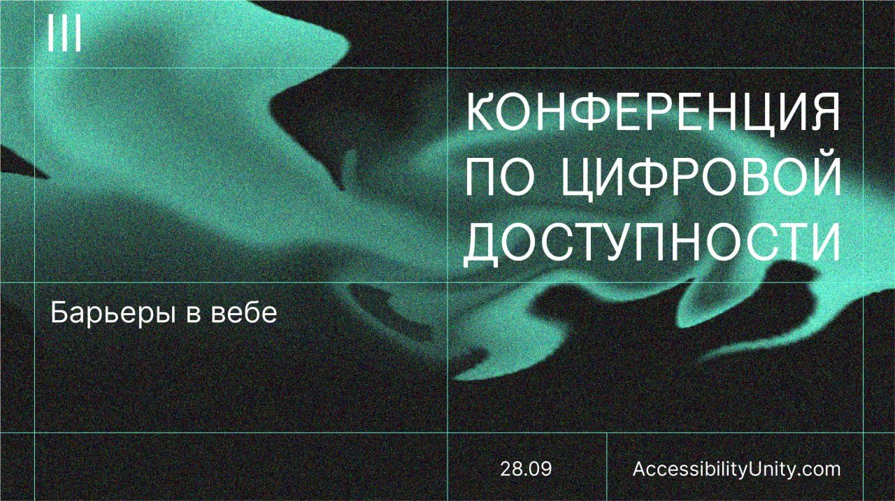
Кто я?
Фронтенд-разработчица.
Пишу, перевожу и рассказываю про доступность.
Редактор раздела о доступности в Доке — справочнике для разработчиков.
Что такое барьер
Барьер — препятcтвие, из-за которого пользователи c особенностями здоровья не могут воспользоваться сайтом в принципе или испытывают при этом трудности.
Гало́-эффект (halation effect) — визуальный эффект, при котором текст становится расплывчатым и вокруг него появляется светящаяся обводка.
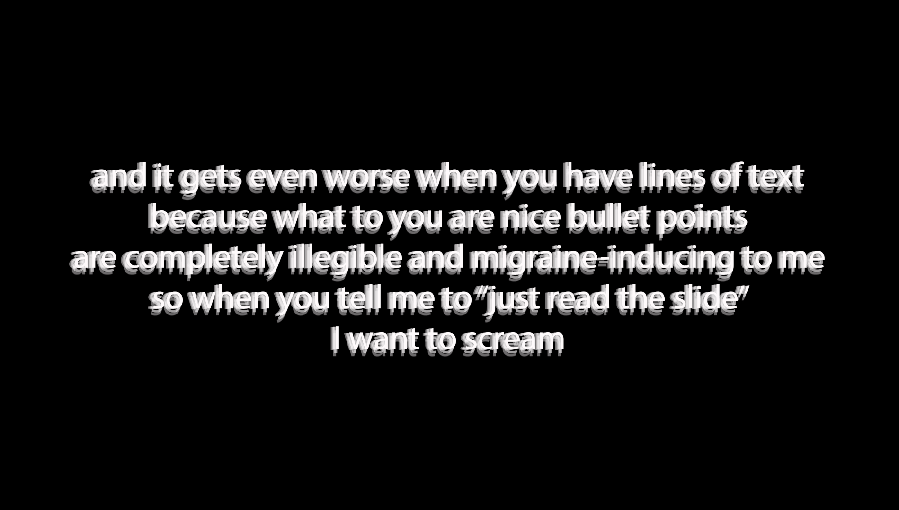
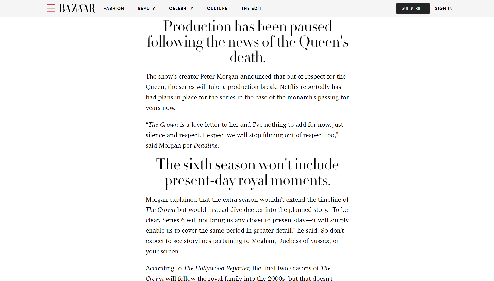
Слишком высокая конрастность
Как избежать барьер
Избегать чисто белого текста на чисто чёрном фоне и наоборот.
Давать людям возможность выбрать цветовую тему.
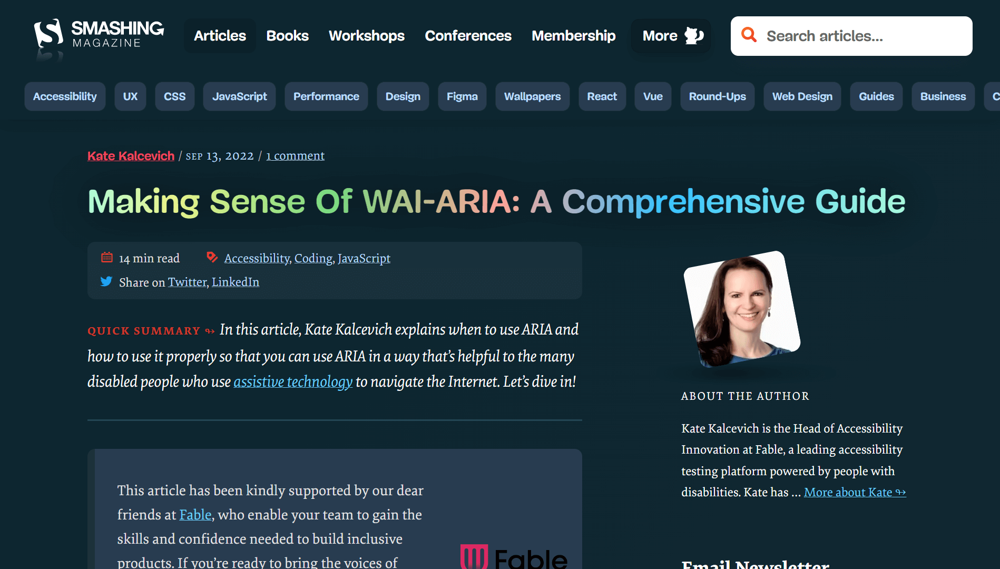
Яркие цвета
Яркие цвета
Для кого это барьер
Люди с расстройствами аутистического спектра.
Люди с мигренями.
Люди с тревожными расстройствами.
Яркие цвета
Опасные цвета
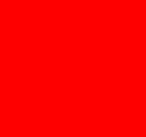
Красный
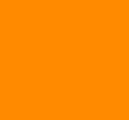
Оранжевый
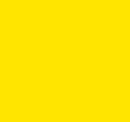
Жёлтый
Яркие цвета
Что такое сенсорная перегрузка
Сенсо́рная перегрузка — состояние, когда мозг получает слишком много ощущений от внешних раздражителей. К примеру, из-за света, цветов, звуков или прикосновений.
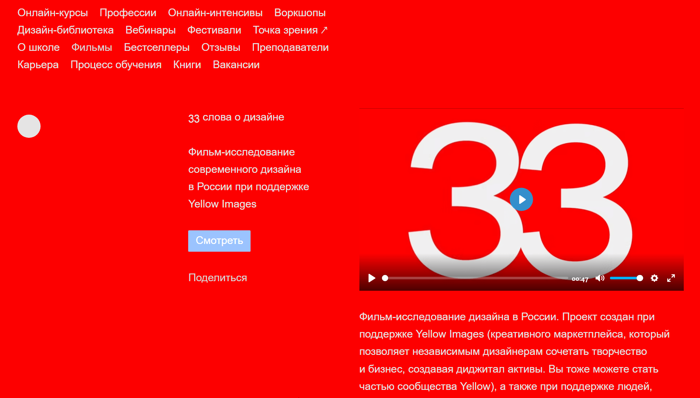
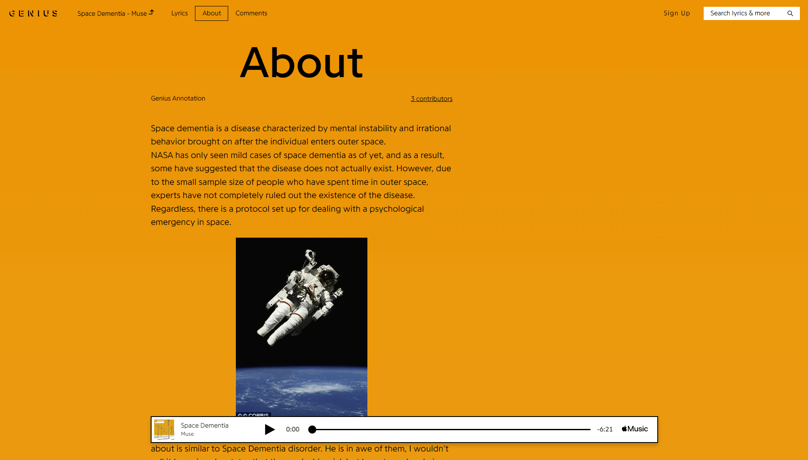
Яркие цвета
Как избежать барьер
Не используйте красный, оранжевый и жёлтый как основные цвета.
Используйте более приглушённые оттенки этих цветов.
Тестируйте сайты с этими цветами в качестве брендовых с реальными пользователями.
Давайте людям возможность выбрать цветовую схему.
Дружелюбные цвета для людей с расстройствами аутестического спектра — бежевый, розовый, лиловый, зелёный, синий.
Передача смысла только цветом
Передача смысла только цветом
Для кого это барьер
Люди с цветовой слепотой — дальтонизмом.
Люди которые просто не разбираются в цветах.
Люди со старыми мониторами и экранами.
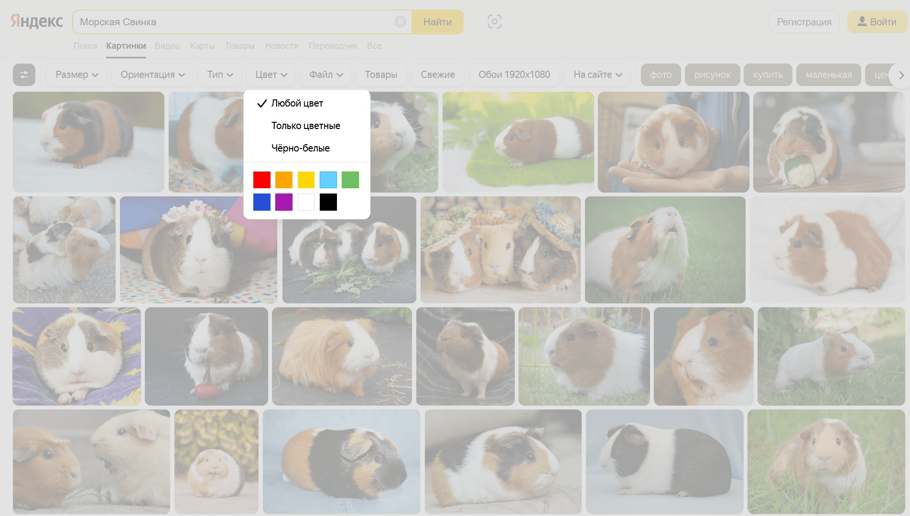
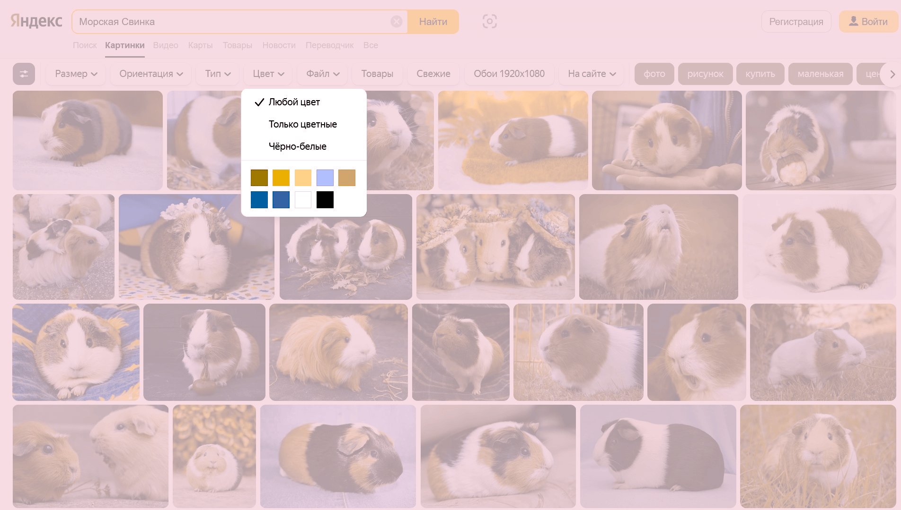
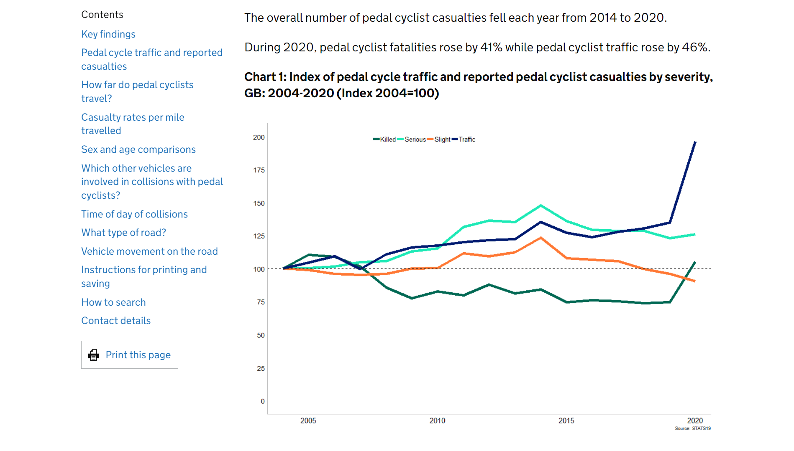
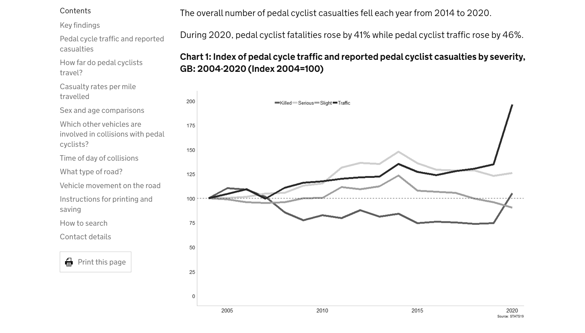
Передача смысла только цветом
Как избежать барьер
Подписывайте цвета.
Если используете фирменные названия цетов, то расшифровывайте их.
Используйте паттерны.
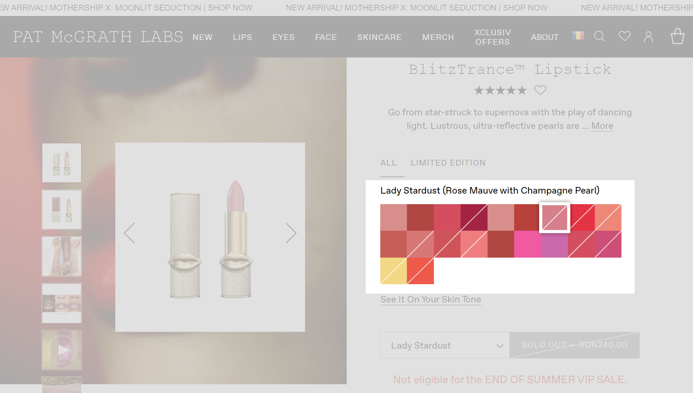
Невозможность увеличить интерфейс
Невозможность увеличить интерфейс
Для кого барьер
Люди с особенностями зрения — слабовидящие, пользователи со сниженным зрением.
Пользователи мобильных устройств.
Невозможность увеличить интерфейс
Статистика по увеличению интерфейса
Зум отключён на 23% десктопных сайтах и 28% мобильных версий сайтов. Web Almanac 2022.
Не используйте maximum-scale=1 и user-scalable=no.
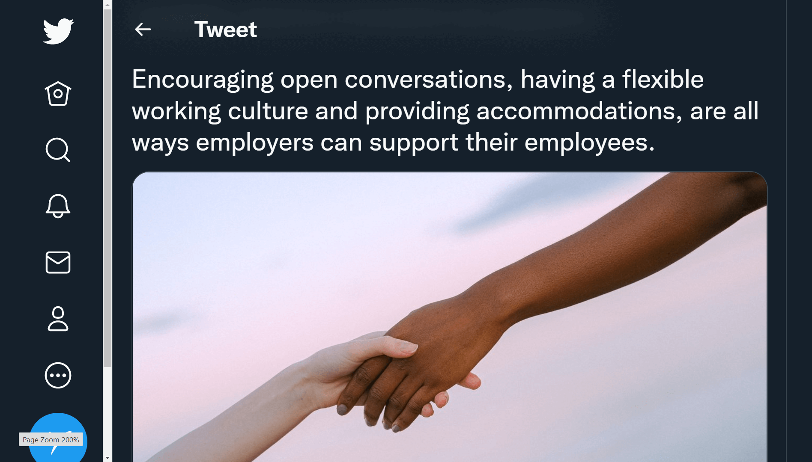
Запутанная структура страницы
Запутанная структура страницы
Для кого это барьер
Люди с когнитивными особенностями — с дислексией, синдромом дефицита внимания, синдромом аутестического спектра.
Пользователи скринридеров.
Запутанная структура страницы
Статистика по заголовкам
На 40.4% сайтов пропущены уровни заголовков, а на 9.9% нет ни одного заголовка. The WebAIM Million 2022.
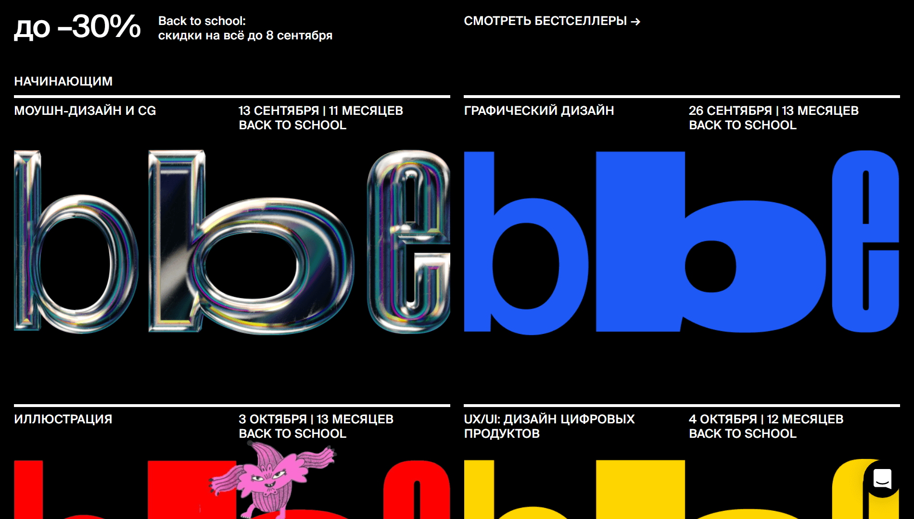
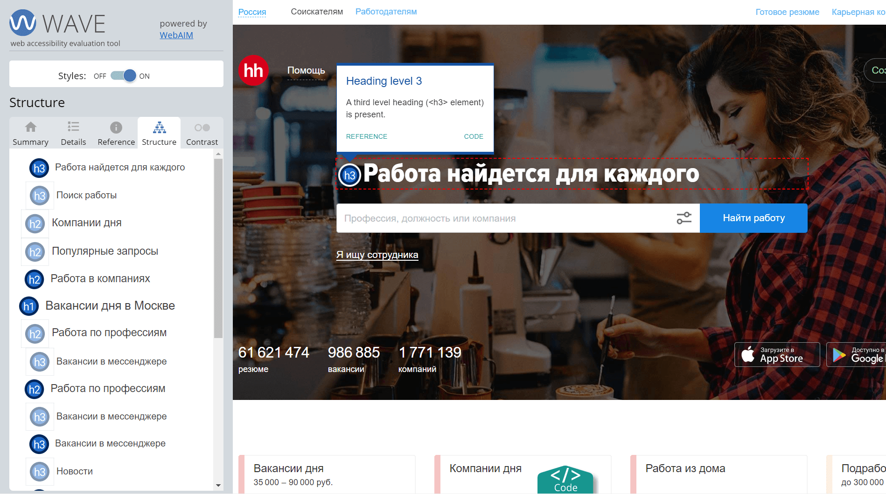
Запутанная структура страницы
Как избежать барьер
Используйте семантические HTML-теги для структуры страницы и обозначения её отдельных частей — <h1>–<h6>, <main> и другие.
Соблюдайте логическую и визуальную иерархию заголовков.
Добавляйте ориентиры на страницу, но не перестарайтесь.
Не забывайте про отступы между блоками текста и вокруг него.
Запутанная структура страницы
Иерархия заголовков
<h1>Главный заголовок</h1> <h2>Второстепенный заголовок</h2> <h3>Заголовок, который связан со второстепенным</h3> <h2>Ещё один второстепенный заголовок</h2>
Запутанная структура страницы
Что такое ориентир
Ориентир — область страницы, к которой могут быстро переместиться пользователи скринридеров с помощью горячих клавиш или через отдельное меню.
Запутанная структура страницы
Ориентиры (1/2)
<header> — хедер страницы.
<footer> — футер страницы.
<nav> — навигация.
<main> — основное содержимое.
<section> — независимая часть основного содержимого.
Запутанная структура страницы
Ориентиры (2/2)
<aside> — дополнительное содержимое, которое не теряет смысл отдельно от основного.
<form> — форма.
Роль search — область поиска.
Запутанная структура страницы
Другие полезные теги
<h1>–<h6> — заголовки шести уровней.
<a> — ссылка.
<button> — кнопка.
<ul> — ненумированный список.
<ol> — нумерованный список.
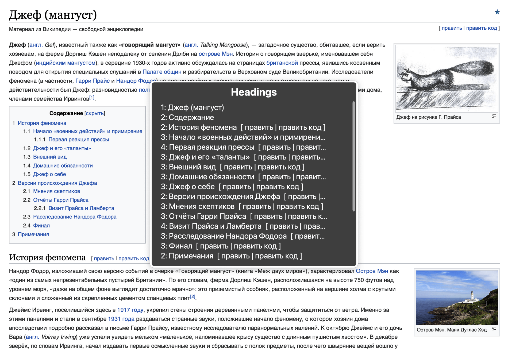
Сложная навигация
Сложная навигация
Для кого это барьер
Пользователи с моторными нарушениями.
Люди с когнитивными особенностями — с дислексией, синдромом дефицита внимания, синдромом аутестического спектра.
Все пользователи скринридеров.
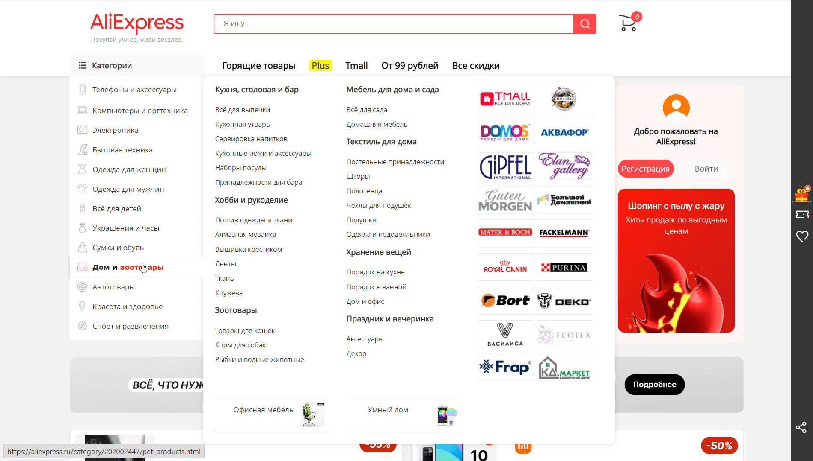
<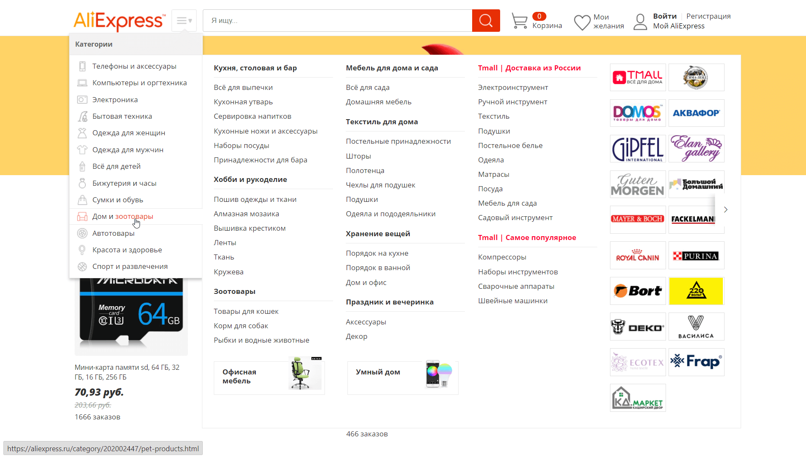
Сложная навигация
Как избежать барьер
Добавляйте в основную навигацию в хедере только важные ссылки.
Следите за консистентностью навигации. Она должна располагаться в одном месте и выглядеть одинаково.
Используйте для навигации ориентир <nav>.
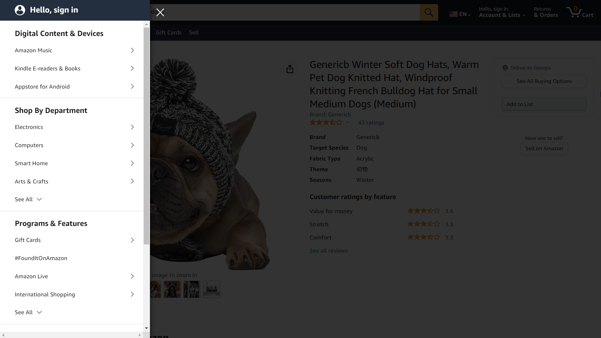
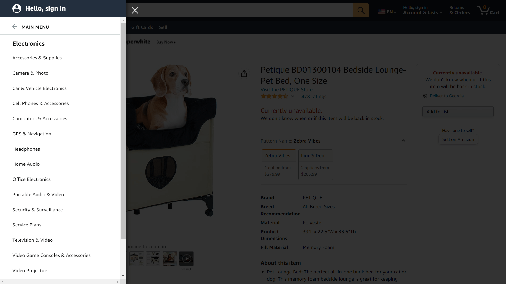
Отсутствующее или плохое описание картинок
Отсутствующее или плохое описание картинок
Для кого это барьер
Люди с особенностями зрения, которые пользуются скринридерами.
Люди когнитивными особенностями, которые не могут понять картинку.
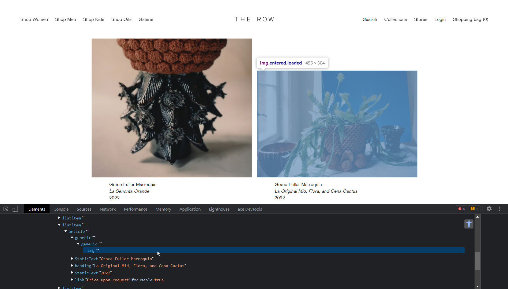
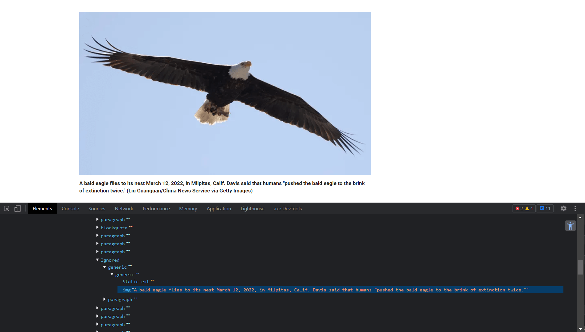
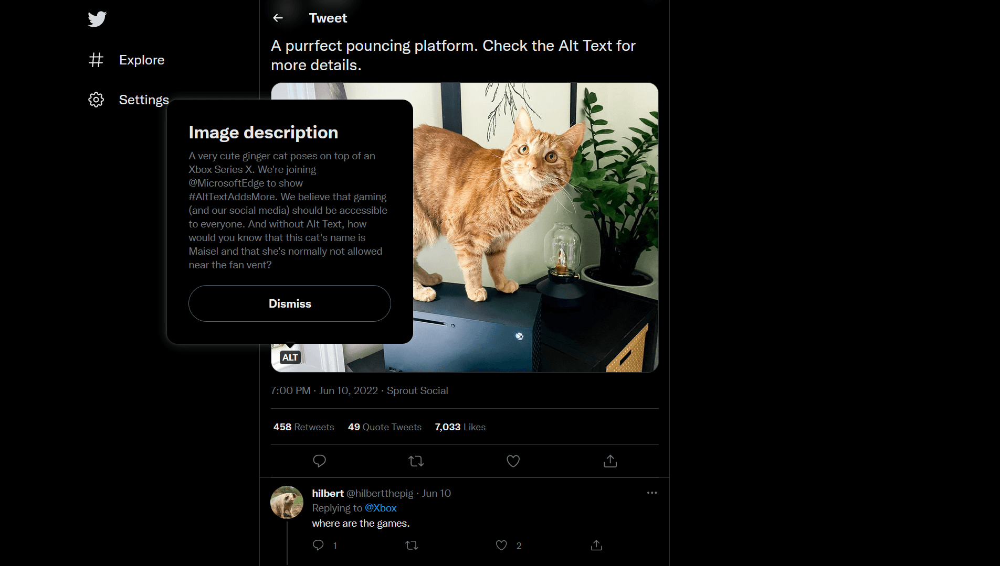
Отсутствующее или плохое описание картинок
Как избежать барьер
Описывать важные картинки в alt.
Стараться рассказать о картинке кратко и по существу.
Ссылки, шутки, пасхалки, хештеги и прочее надо добавлять в пост или на страницу, а не в alt.
Не дублировать в alt текст, который уже есть на странице.
Не использовать в описании слово «картинка», «изображение».
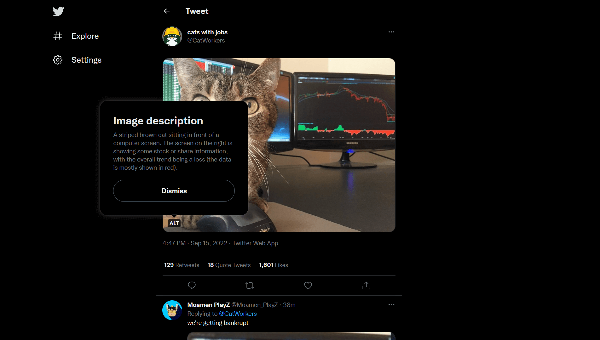
Тексты с аббревиатурами
Тексты с аббревиатурами
Для кого это барьер
Люди с когнитивными особенностями и нейроотличиями — синдром аутестического спектра, дислексия, сниженный уровень интеллекта.
Люди с врождённой глухотой.
Пользователи, которые не знакомы с темой.
Тексты с аббревиатурами
Игра «Пойми без Гугла»
Идея ББК была навеяна УДК.
ББК состоит из нескольких частей — основных таблиц, ОТД, СТД и АПУ.
Авторскими правами на ББК владеют РНБ, РГБ и БАН.
Тексты с аббревиатурами
Как избежать барьер
Расшифровывайте аббревиатуры в тексте при первом упоминании.
Если аббревиатур много, подумайте о глоссарии — словаре с разъяснением терминов.
В крайнем случае используйте <abbr> с title или тултипы.
Тексты с аббревиатурами
Текст с расшифровками
Идея ББК (Библиотечно-библиографической классификации) была навеяна Универсальной десятичной классификацией или коротко УДК.
ББК состоит из нескольких частей — основных таблиц, ОТД (общих типовых делений), СТД (специальных типовых делений) и АПУ (алфавитно-предметного указателя).
Авторскими правами на ББК владеют РНБ (Российская национальная библиотека ), РГБ (Российская государственная библиотека) и БАН (Библиотека Академии наук).
![Сайт Airtable с таблицей. В панели нагивации вверху страницы выделено несколько пунктов. «Посмотреть» с иконкой из трёх линий рядом, «Таблица» с иконкой группы людей и прямоугольника с линиями внутри, «Скрыть поля» с иконкой перечёркнутого глаза, «Фильтр» с иконкой из трёх линий, которые становятся короче к низу, «Группировать» с иконкой прямоугольника с буллитами и линиями рядом с ними внутри, «Сортировать» с иконкой стрелки вниз и стрелки вверх, «Цвет» с иконкой банки краски, иконка с несколькими горизонтальными линиями и вертикальной линией с двумя стрелками, «Поделиться» с иконкой квадрата с выходящей из него стрелкой вверх.](pictures/airtable-menu.png)